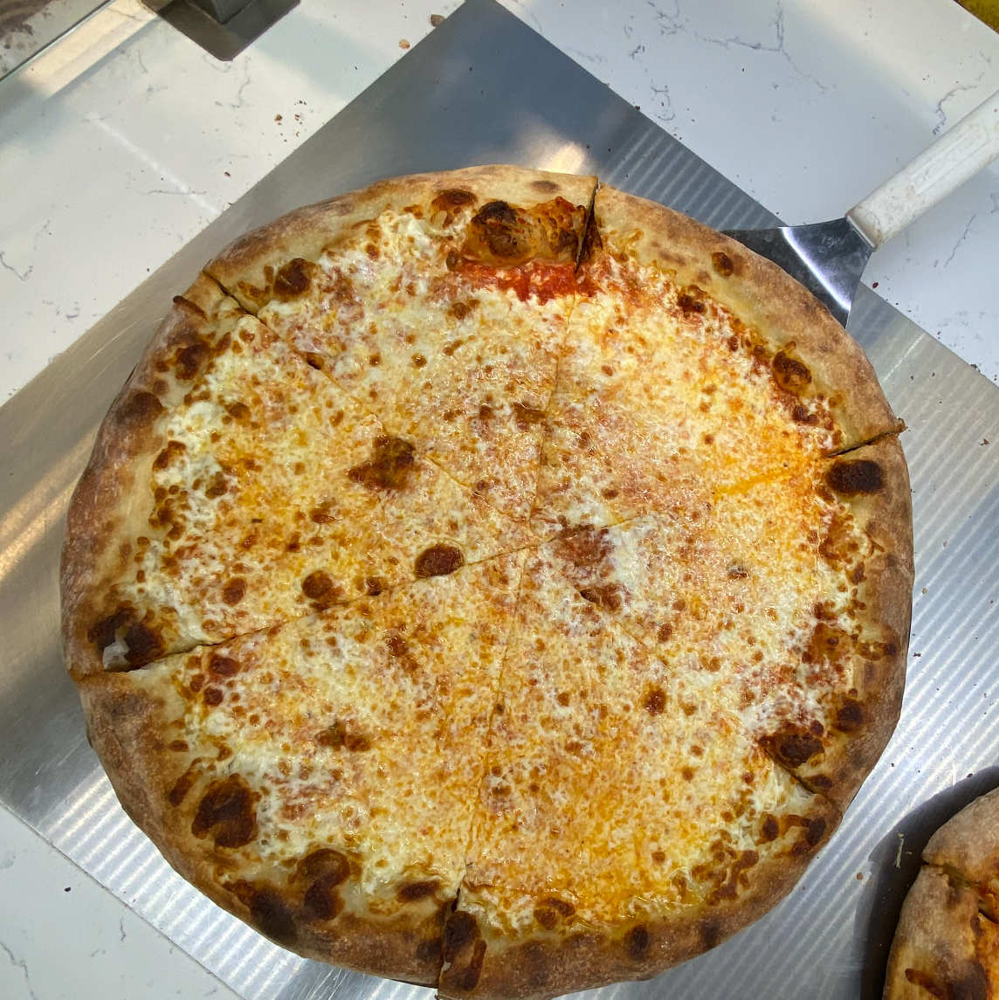

Hi!
Thanks for visting my site! If you're reading this you've probably seen my resume. My goal for this site is to have minimal overlap with what you already know about me.
My Greatest Skills
Some of the most important skills I have are the hardest to convey but I attribute much of my academic and personal success to them:
- Observation: I'm always paying attention and notice the tiniest changes and errors
- Learning: Because I always find myself watching, I end up passively learning from others anywhere I go
- Self-Teaching: I have taught myself topics ranging from how to make and toss pizza  dough to how to program with Python
Things I Believe are Good
My personal philosophy permeates through all areas of my life and makes up many of the things I like and those I enjoy doing. Here are some:
- Simplicity
- Long-term thinking
- Giving trust to strangers
- Listening more than I talk
- Believing the benefits of integrity outweigh the costs
Explore My Work
Check out my coding projects, read my articles, or learn more.